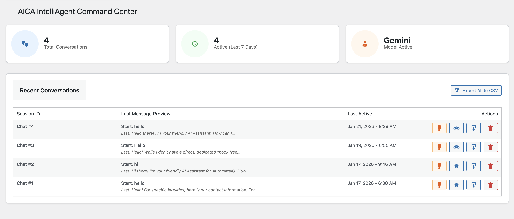
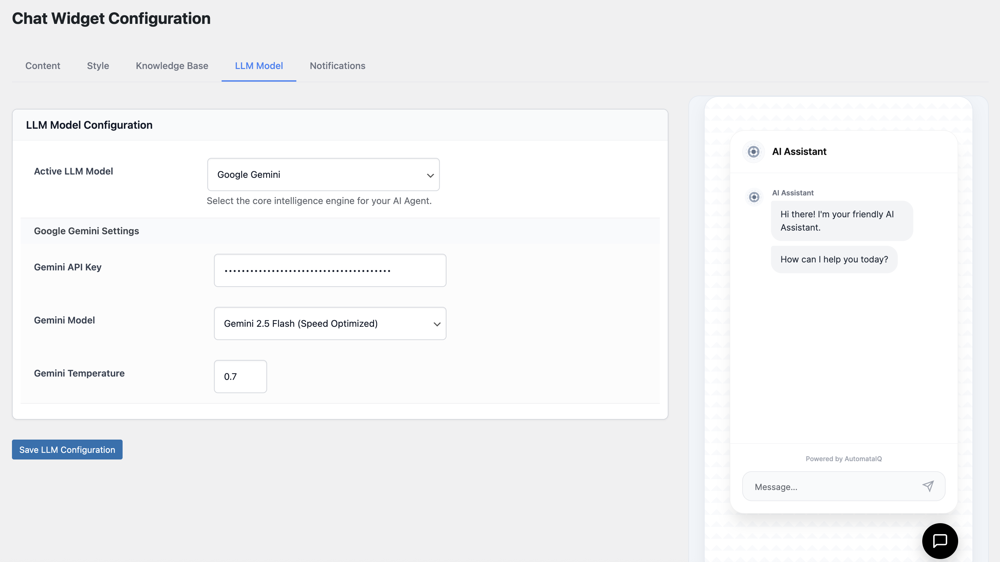
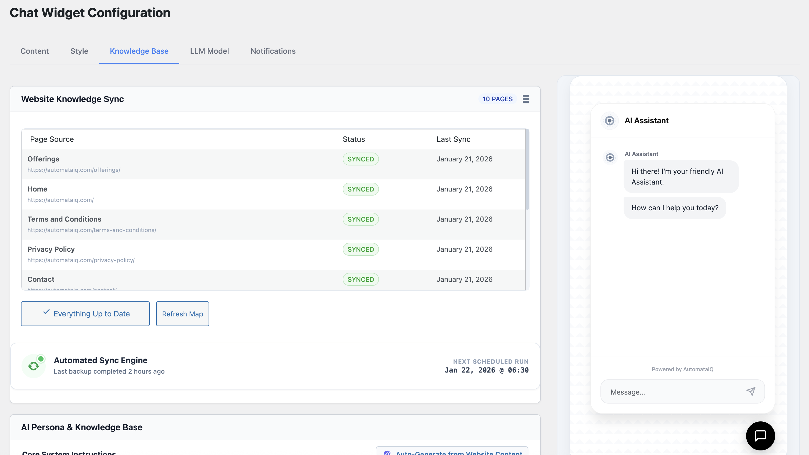
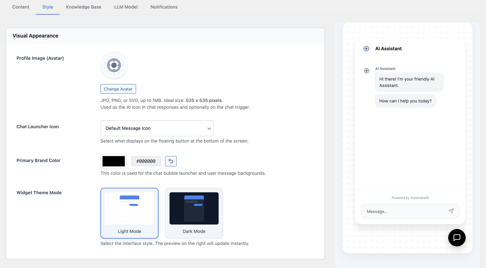

Introduction
AICA Agent is an elite AI chat solution for WordPress that creates a dynamic knowledge hub on your site. Using flagship models like GPT-5.2, Gemini 3, and Grok 4, it delivers high-fidelity, contextual answers based on your unique business data.

Installation
Follow these steps to deploy AICA Agent:
- Download
aica-intelliagent.zipand upload it via Plugins > Add New > Upload Plugin. - Activate the plugin and look for the AICA Agent menu in your sidebar.
- Proceed to Settings to configure your preferred AI provider.
API Configuration
Connect your agent to the world's most powerful AI engines in the Settings tab.
- OpenAI: Generate keys at the OpenAI Dashboard for standard GPT intelligence.
- Gemini: Use Google AI Studio keys for massive document handling and free-tier access.
- Grok: Use xAI tokens for real-time, modern conversational efficiency.

Knowledge Base Management
Transform raw content into AI intelligence using our multimodal ingestion system.
- Website Scraping: Automated DOM scraping that converts your pages into clean text data.
- Multimodal Uploads: Upload
PDF,TXT, orImages. The agent uses Vision and specialized parsing to extract every detail. - Smart Sync: WP-Cron automatically refreshes your site knowledge every 24 hours.

Interactive Features
Elevate the user experience with modern chat utilities designed for utility and feedback.
- AI Response Feedback: Users can rate AI answers with thumbs up/down, allowing you to monitor accuracy.
- One-Click Copy: Each AI response includes a "Copy" icon, letting users instantly save transcripts or answers to their clipboard.
- Lead Notifications: Receive instant email alerts when important conversations reach critical milestones.
Summarization & Data Export
AICA Agent provides powerful tools to manage and analyze your chat data without manual effort.
- CSV Log Export: Download all chat logs in structured CSV format for offline reporting or CRM integration.
- Lead Tracking: View recent statistics, total conversations, and user sentiment at a glance from the dashboard.
Chat Customization
White-label the interface to match your exact brand identity.
- Smart Persona: Use the Auto-Generate Prompt feature to let the AI write its own professional system instructions based on your site content.
- Styling: Control primary colors, theme modes (Light/Dark/Auto), and custom avatars.

Support & License
License: Licensed under GPL v2.0. Free for use on client and personal sites under your Envato agreement.
Support: Reach out via the Envato support portal. Responses are usually delivered within 24 hours.